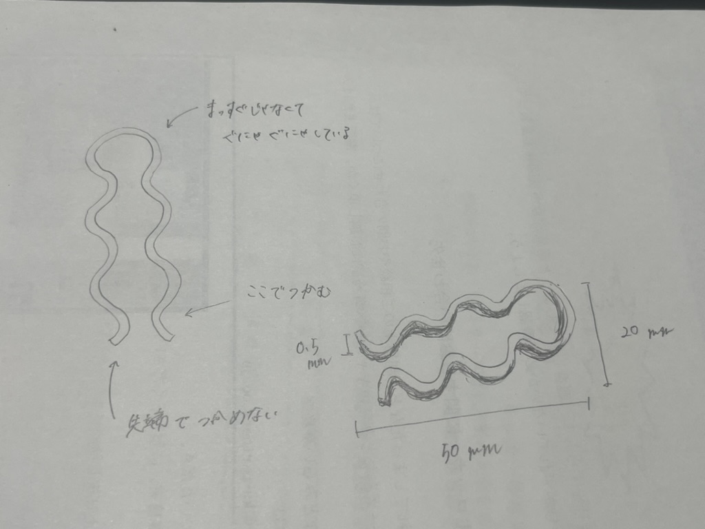
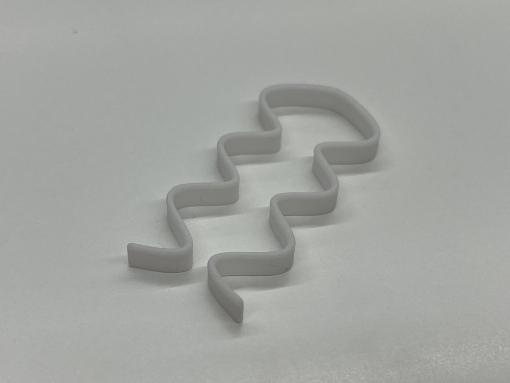

🎀✨Assignment1 3Dprinting✨🎀
~先端で掴まないピンセット~
🔍構造段階のスケッチ

🔍完成品

🔍設計ファイル
＞＞＞ここから飛んで見ることができます🎀✨
🔍説明
普通はまっすぐで、先端で掴むものだがそうではない、”普通じゃない”ピンセット
形状：長さ50mm、幅20mm、高さ0.5mm
🔍作品の想い
ピンセットの固定概念とは違う、新しい形のピンセットを作りたいと思い、作りました。
『まっすぐではなく、ぐにゃぐにゃしている。そして先端で掴めない一風変わったピンセット。』